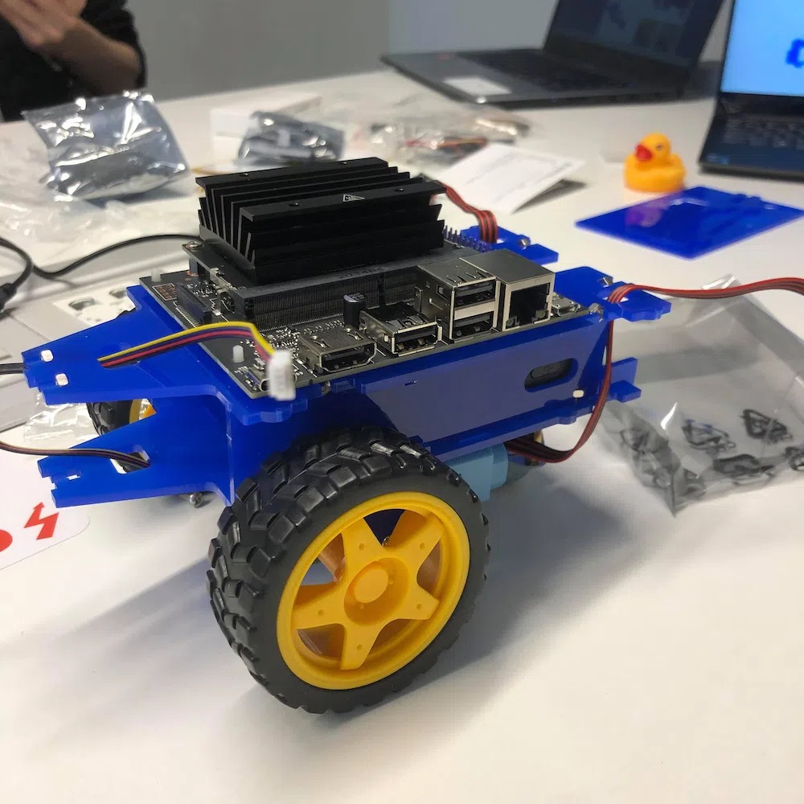
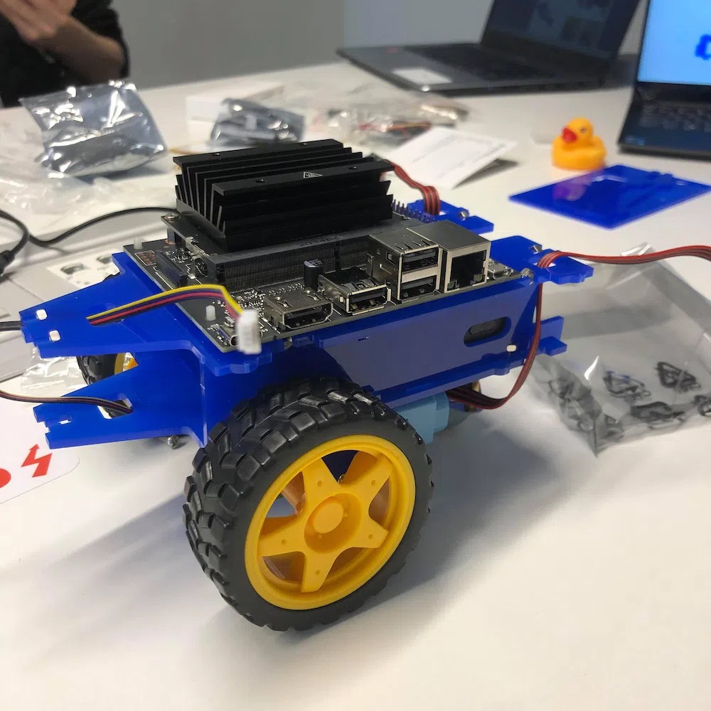
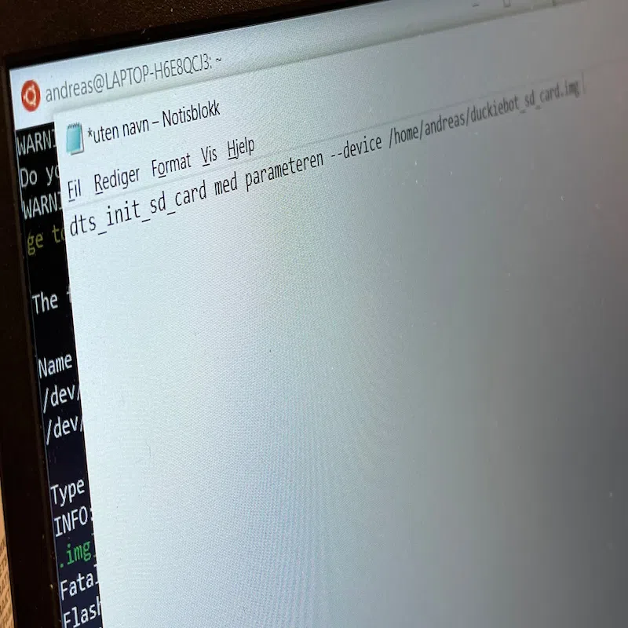
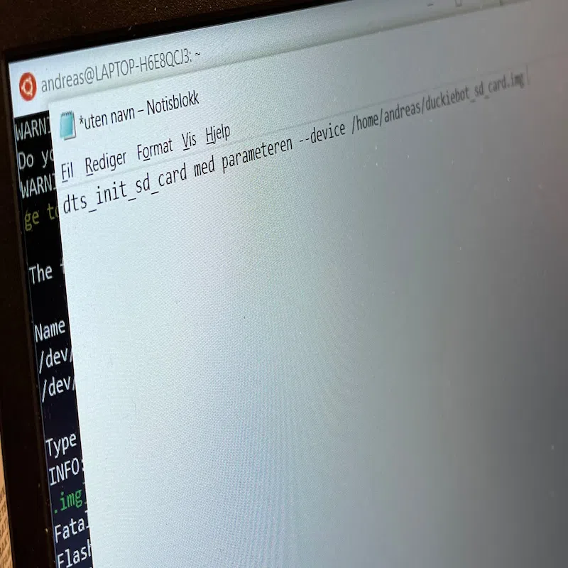

 


#1 Hvorfor? hvordan¿ + problemer!
8 Oktober, 2021 01:51
Whether it’s enhancing a button, killing time while a page loads, or adding some extra flair to a landing page, animation is an effective way to hold attention and delight viewers on your website.
Første artikkel skal skrives og testes ut, så jeg tenkte å introdusere første artikkel for selve nettsiden.
Som dermed vil kunne svare på spørsmål rettet mot nettsiden, som; Hvorfor? Hvordan? Og HVA?
Hvorfor?
Siden jeg (Stian) startet med webutvikling på første semester, har jeg trivdes godt med front-end utvikling. Html, css & javascript interesserte meg såpass mye at jeg har på fritiden lært meg opp mer i dybden på disse.

Selve grunnen til at dette interesserer meg kan man
jo lure på. Har på en måte alltid likt teknologiske
duppe-ditter. Selve ideen til nettsiden var en spøk,
som Simen sa til meg at jeg burde lage for moroskyld.
Og noen dager senere var jeg på en jobbtur som innebar mangfoldige timer i bil, så jeg tenkte: hvorfor ikke bruke tiden fornuftig? Så jeg startet med å skrive html´en fra scratch, og visste ikke helt hva jeg ville ha med fra start. Jeg visste sånn cirka hvordan nettsiden skulle se ut, men jeg visste ikke helt hva innholdet skulle være.
En annen grunn til å starte på dette prosjektet var i all hovedsak at jeg har tidligere interessert meg for å lære mer css, så ta steget til scss, også er målet mitt å bli flink nok slik at jeg kan starte på for eksempel React en dag. For øyeblikket er React milevis unna føles det ut som.
Hvordan?
Dette er kanskje litt enklere å svare på, men hvorfor ikke? Jeg går dataingeniør, det er relevant for min hverdag vil jeg tro. Interessen er der, så hvorfor ikke sjekke om jeg faktisk klarer?

Selve hvordan er jo litt trinnvis for de som ikke vet det. Man må skrive selve nettsiden i HTML, style den med css (scss, i mitt tiflelle). Man må kunne skaffe et domene (ip-adresse) som folk utenfra kan nå nettsiden på.
Samtidig skal noen hoste selve serveren som siden ligger på, så jeg bruker www1.domain.com sine sider for å hoste www.stianlarsen.com. Interessespekteret går mest ut på de tingene jeg ikke kan eller klarer.
setter meg oftest som mål å få til noe jeg ikke klarer. Denne nettsiden dypper dypt ned i de temaene jeg føler meg usikker på, så bruker dermed tid på å lære det. Med dette menes feks:
- Bruke JavaScript for å åpne / lukke «se mer» feltet for oss personene i prosjektet.
- Bruke JavaScript for å åpne artikler og lukke artikler.
- Åpne lukke går da ut på å toggle mellom classer som bli lagt til i html dokumentet.
- Lære seg Document Object Manager (tror jeg?).
- Bruke pseudoelementet ::before & ::after for å redigere innhold.
Templates & implementasjon
Jeg er ish "ferdig" med nettsiden i form av at barebonet er ferdig. Templates for å skrive fremtidige artikler er med andre ord i orden. Målet nå blir å kunne oppdatere siden og legge inn progressjoner i faget vårt for å oppdatere leserne. Videre utover dette forsøker jeg på best mulig vis å utfordre meg selv ved å implementere flere og flere funksjoner i JavaScript.
Problemer?
Jeg har støtt på en del problemer underveis som har tatt timesvis å fikse opp i. For øyeblikket nå kan man kun åpne en artikkel ved å klikke seg på artikkel elementet, og det kan kun lukkes ved å trykke hvor som helst på selve artikkelen. Dette er ikke noe jeg ønsker. Jeg har lagt ved en button med X oppi høyre hjørnet som skal funke som en knapp for å lukke artikkelen. Men den vil ikke fungere. Tror det kan ha noe å gjøre med at jeg har en funksjon som aktiveres når brukeren klikker på selve artikkelen (hvor som helst), og at dette "interferer" med fuksjonen jeg vil kjøre når knappen aktiveres.
Koden:
Koden for å åpne og lukke artikkelen ser per dags dato sånn her ut. Jeg kan nok komme til å endre denne gradvis, spørs på hvordan jeg løser button-problemet jeg beskrev over.
Under ser man min "alternative" kode som ikke fungerer...
Problemet med dette er at OM noen kommer borti museknappen og trykker et sted så lukker artikkelen seg, og det betyr at hvis noen vil prøve å kopiere noe tekst, vil den også bare lukkes. Dette henger ikke helt på grep, right?.
Jeg har prøvd å få til overnevnte funksjon lenge uten hell. Tror jeg må gå dypere til verks, blit litt surr i koden for øyeblikket. Kommer mer tilbake til dette senere.